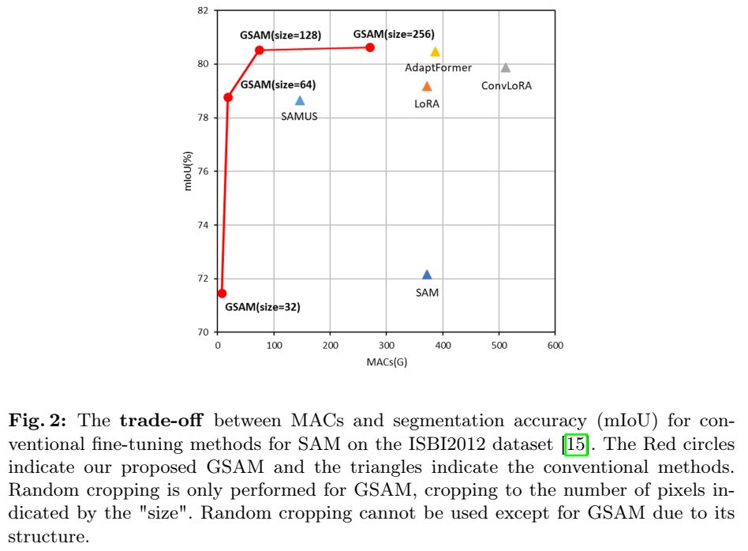

论文阅读三十二：广义SAM：可变输入图像尺寸的SAM的高效微调
摘要
有大量近期研究关于改进微调基础模型的效率。本文中，我们提出一种新颖的高效微调方法，允许SAM的输入图像大小是可变的。SAM是用于图像分割的强大基础模型，训练在巨大数据集上，但它需要微调来识别任意类别。SAM的输入图像尺寸固定在 ，导致训练中的大量计算需求。此外，固定输入图像尺寸可能导致图像信息损失，即，由于固定的宽高比。为解决这个问题，我们提出广义SAM（GSAM）。不同于先前方法，GSAM是第一个在SAN训练中应用随机裁剪，从而显著降低训练的计算成本。在各种类型和各种像素数的数据集上进行的实验表明，GSAM 可以比 SAM 和其他 SAM 微调方法更有效地进行训练，实现相当或更高的准确率。我们的代码： https://github.com/usagisukisuki/G-SAM 。
引言
深度学习已被广泛应用于各种图像识别问题，并取得了巨大成功[13,14,19]。特别是，近年来，提出了一种称为基础模型的大规模综合模型，众所周知，它是一种强大的模型，可以为各种任务实现高性能[3,12,23]。在语义分割领域，SAM[18]于2023年提出，无需训练即可对自然图像进行高度精确的分割。然而，如果我们想使用SAM识别任意类，我们需要使用目标数据集的教师标签进行微调。由于SAM的输入图像大小固定为1024×1024，这在微调过程中会导致巨大的计算成本问题。
虽然已经提出了LoRA[16]和AdaptFormer[9]等方法来更有效地微调SAM，但这些方法的输入图像大小固定为1024×1024，与SAM相同，并且由于输入图像大小导致的计算成本问题尚未得到解决。还提出了一种SAM微调方法，该方法将输入图像大小减小到SAM，并可以在256×256等小图像上进行训练[20]，但输入图像大小必须固定。由于每个数据集中的像素计数数量不同，使用固定数量的像素计数可能会导致严重的问题，如丢失图像信息。
在本文中，我们提出了广义SAM（GSAM），即使输入图像大小可变，它也可以进行训练。在SAM之前提出的基于卷积神经网络（CNN）的传统分割模型[8,25]中，即使训练和推理过程中的输入图像大小不同，分割也是可能的，因此可以在训练过程中输入一个小的随机裁剪图像，并在推理过程中输入原始图像大小以获得分割结果。如图1所示，GSAM是第一种使用SAM可以在训练时应用随机裁剪的方法，使用较小的随机裁剪大小可以降低训练时的计算成本。SAM的固定输入大小是由于固定大小的位置编码。因此，GSAM通过采用由深度卷积层组成的位置编码生成器（PEG）[10]来替代位置编码，从而支持可变的输入图像大小。此外，我们还提出了空间多尺度（SM）AdaptFormer，以便在微调过程中考虑更多的空间信息。SM-AdaptFormer具有尺度结构，并且可以处理整合了更多样化和更广泛空间信息的特征向量。这是一种特定于分割的微调方法，因为正确的分割需要各种尺度的信息。
通过对由车载图像、卫星图像、显微图像、内窥镜图像、CT图像和透明物体图像组成的七个不同数据集的评估实验，我们证实，与SAM的传统微调方法相比，所提出的GSAM可以显著降低训练的计算成本，并实现相当或更高的分割精度。如图2所示，GSAM通过启用随机裁剪实现了较低计算成本和较高精度的权衡。特别是，在Synapse多器官数据集（即CT图像）上，GSAM的分割精度比传统的SAM微调方法高出11%以上，表明我们提出的方法在某些领域可能非常有效。

本文的结构如下。第2节描述了相关工作。第3节详细描述了我们提出的方法。第4节显示了实验结果。最后，第5节描述了结论和未来的工作。
我们的贡献总结如下：
- 我们提出了一种新的有效的SAM微调方法，GSAM。GSAM可以应对可变的输入图像大小，允许在SAM微调期间首次使用随机裁剪。
- 我们还提出了SM AdaptFormer，用于在SAM微调过程中获取多尺度特征。
- 通过对各种数据集的评估实验，我们证实，与传统的SAM微调方法相比，GSAM可以显著降低训练的计算成本，并实现相当或更高的分割精度。
相关工作
分割模型
自从U-Net[25]彻底改变了图像的语义分割领域以来，已经提出了各种架构来提高准确性[1，34]。PSPNet[32]和DeepLab系列[6-8]等专门用于获取各种尺度特征的方法，以及最近基于Transformer的方法也出现了[4,5]。与这些方法相比，GSAM不需要特别复杂的结构，只需要对基础模型SAM进行有效的微调，以适应语义分割，从而实现具有竞争力的性能。
基础模型
自Transformer[28]于2017年发布以来，由于其惊人的可扩展性，已经构建了各种基础模型。BERT[12]、LLaMa[27]和GPT-4[3]等基础模型在自然语言处理方面表现出了突破性的性能。最近，计算机视觉领域的基础模型有了显著的发展，有许多高性能模型，如分割一切模型（SAM）[18]、CLIP[23]和稳定扩散（Stable Diffusion）[24]。除其他外，SAM是在具有高零样本泛化性能的巨大数据集上训练的分割模型。然而，基础模型通常具有较高的泛化性能，但缺乏专业知识，需要微调以正确识别特定的下游任务和任意类。因此，正在进行大量研究，以有效和高效地微调SAM等基础模型。
SAM的高效微调
当我们使用大量参数（如SAM）微调基础模型时，更新所有参数的计算成本非常高。因此，通常只更新部分权重参数，以较低的计算成本实现微调。低秩自适应（LoRA）[16]通过将可学习的低秩矩阵应用于每个Transformer层，成功地减少了下游任务中可学习参数的数量。这种方法起源于自然语言处理领域，但也适用于计算机视觉，可用于微调SAM。ConvLoRA[33]还提出了将卷积层应用于LoRA并增强图像相关局部先验以实现更高精度的方法。此外，AdaptFormer[9]通过在每个前馈网络（FNN）中使用两个完全连接的层和一个激活函数，以最小的额外可学习参数实现了更高的精度。
然而，这些方法的输入图像大小固定为1024×1024，与SAM相同，因此与输入图像大小相关的计算成本问题尚未得到解决。在这篇论文中，我们建议在训练期间仅使用较小的输入图像来降低微调SAM的计算成本。
更改SAM的输入图像大小
最近，已经提出了一些方法，通过将SAM的输入图像大小从1024×1024减小，允许使用较小的图像进行训练。SAMed[31]通过将LoRA应用于SAM，使输入图像大小为512×512。此外，SAMUS[20]通过使用交叉注意力集成Transformer和CNN的特征图，即使输入图像大小较小，为256×256，也能在医学图像分割中实现高精度。
然而，如果要处理的图像大于输入大小，则有可能由于调整大小而丢失图像信息。在这种情况下，需要一种即使输入图像的大小在训练和推理之间不同也能进行分割的方法。
建议方法
为了在训练中有效地利用随机裁剪进行微调，本文提出了一种称为广义SAM（GSAM）的新方法。图3显示了GSAM的概述。在GSAM中，提示编码器的所有权重参数和Transformer编码器的一些权重参数都是固定的，其他权重参数在微调过程中会更新。此外，GSAM增加了一种新的结构，在训练中使用随机裁剪。GSAM各结构的详细信息见第3.1节和第3.2节。
随机裁剪在训练中的应用
由于SAM的输入必须是1024×1024的固定大小，因此在训练过程中不可能处理小图像大小的随机裁剪。SAM输入必须固定的最重要原因是，作为SAM组件的Transformer编码器中的位置编码具有固定大小。位置编码是一种结构，它向每个标记添加信息，以通知视觉Transformer自身的位置。在SAM的情况下，它是一个具有固定大小的可学习权重参数。因此，GSAM采用位置编码生成器（PEG）[10]作为位置编码的替代品。PEG由一个深度卷积层组成，仅考虑空间定向，这使得即使在特征图的输入大小可变时，它也能保留位置信息。
然而，原始的预训练SAM不支持随机输入，仅在Transformer编码器中通过自我注意进行全局学习可能不足以应对小而可变的输入。因此，我们使用一个由CNN组成的新网络，如图3所示，作为CNN编码器，通过整合CNN特征和SAM特征进行学习。由于通过CNN的局部内核学习对较小的输入图像有效，因此被认为可以补充SAM中Transformer编码器的特征图。GSAM将保留了一些空间信息的ResNet101[14]的第三块的特征图添加到Transformer编码器的预输入和后输出特征图中。这使得能够使用随机裁剪进行有效的微调。综上所述，PEG和CNN编码器的引入允许使用随机裁剪和相应的特征提取。
空间多尺度AdaptFormer
为了进一步提高目标数据集的判别精度，我们提出了空间多尺度（SM）AdaptFormer。图4展示了SM-AdaptFormer的概览。AdaptFormer[9]被认为是一种低计算成本和高性能的SAM微调方法，但AdaptFormer并不考虑空间信息。由于空间特征是语义分割中的重要信息，因此提出的SM AdaptFormer准备了具有不同范围内核的多个卷积层，并获取了多尺度特征。
对于具有广泛核的卷积层，我们采用了扩展卷积[30]。扩展卷积可以扩展感受野，同时保持相同的核大小，允许在不增加计算成本的情况下进行全局特征提取。当将扩展卷积应用于输入特征图x时，可以使用每个像素的位置i和卷积核w将输出特征图y表示为方程式（1）。
其中r是决定步幅宽度的参数，通过改变r可以自适应地改变卷积层的感受野。SMAdaptFormer提供了两个卷积层，其核大小分别为1×1和3×3，以及扩展卷积（r=12）、扩展卷积（r=0.24）和扩展卷积（=32），总共有五种类型的感受场。通过将这些小到大的感受野相加，可以学习到覆盖这些感受野的多尺度特征。
在原始的AdaptFormer中，在全连接层中先降低一次维度，然后在全连接层中恢复到原来的维度，以低计算成本学习参数，SM-AdaptFormer中使用了相同的结构。因此，即使在获取多尺度特征时，输入是低维的，从而避免了计算膨胀。
实验
数据集和指标
在实验中，我们评估了来自不同领域的不同类型的图像数据，这些数据具有不同的输入图像大小：车载图像、卫星图像、显微图像、内窥镜图像、CT图像和透明物体图像。我们使用了两个包含10000多张图像的大型数据集和五个包含1000张或更少图像的较小数据集。具体来说，我们将Cityscapes数据集[11]（19类）用于车载图像，将Trans10k数据集[29]（3类）用于透明物体图像作为大型数据集。
作为较小的数据集，我们使用CamVid数据集[2]（11个类别）用于研究图像，使用Massachusetts Buildings数据集[22]（M-Building，2类）用于卫星图像，使用ISBI2012数据集[15]（2类）进行显微图像，使用Kvasir SEG数据集[17]（2类，用于内窥镜图像），使用Synapse多器官数据集[26]（Synapse，9类）进行CT图像。表1和表2中列出了每个数据集的像素数。
在语义分割中，交并比（IoU）通常被用作评估指标，它表示预测和真实标签之间的重叠率。因此，我们使用平均IoU（mIoU）和所有类别的平均IoU作为评估指标。
训练条件
在这篇论文中，我们使用了Pytorch库，并使用Adam优化器对模型进行了200个迭代周期的训练，批处理大小为8。学习率最初设置为0.005，并使用余弦学习率调度器逐渐降低[21]。为了进行比较，我们使用了传统的基于CNN的网络，如U-Net[25]和DeepLabv3+[8]，以及使用SAM的高效微调方法:LoRA[16]、ConvLoRA[33]、AdaptFormer[9]和SAMUS[20]。
对于训练过程中的数据预处理，我们对基于CNN的方法和GSAM使用了随机裁剪、水平翻转和随机旋转。其他方法只接受固定大小的图像，因此不能使用随机裁剪。因此，我们只应用了水平翻转和随机旋转。然而，随机旋转不用于车载图像和透明物体图像。这是因为这两种类型的图像具有明确定义的顶部和底部，不需要通过随机旋转进行预处理，因为随机旋转会改变顶部和底部的方向。表1和表2中列出了随机裁剪的图像大小。
实验结果
定量结果。表1和表2显示了每个数据集的定量结果。无论数据集的大小如何，GSAM都达到了与使用SAM的现有微调方法相当甚至更高的精度。表中的红色数字表示最准确的值。除了Trans10k和CamVid数据集，所提出的方法SM-AdaptFormer和GSAM对其他五个数据集的准确性最高。特别是对于Synapse多器官数据集，即CT图像，与AdaptFormer相比，SM-AdaptFormor和GSAM的准确性分别提高了4.78%和11.50%。这一结果表明，我们提出的方法在某些领域可能非常有效。此外，对于所有数据集，GSAM显示出比由CNN组成的网络更高的准确性。这被认为是由于SAM本身的有效性，SAM是基于Transformers的底层模型，加上基于CNN的SM AdaptFormer对空间信息的学习，以及通过随机裁剪进行数据扩展的效果，这利用了每种方法的优点。

另一方面，对于Trans10k和CamVid数据集，最准确的是AdaptFormer，而第二准确的是SM AdaptFormers，这是提出的方法。Trans10k数据集包含图像中相对较大的对象。在这种图像的情况下，用于提取多尺度信息的SM-Adaptformer被认为用处不大，因为精细细节等信息的重要性不高。CamVid数据集在数据集中有很多类，并且被认为更难进行微调。原因可能是SM-AdaptFormer设置的扩展卷积速率数量不合适，因为其中包含了小对象。然而，在Cityscapes数据集中，SM-Adaptformer的准确性优于Adaptformar，该数据集在系统学上与CamVid相似，CamVid被认为最佳的扩展卷积速率数量因数据集而异。然而，GSAM的优点是它支持可变的输入图像大小。能够以原始形式输入长宽比非 1:1 的图像（例如 CamVid 和 Cityscapes 数据集），而无需进行任何平滑或裁剪，这是GSAM在SAM微调方法中的独特优势。
Trans10k和Kvasir SEG等数据集在图像中具有相对较大的对象和较少的类，更容易进行微调，并且方法之间的精度差异较小。对于这样的数据集，GSAM执行随机裁剪的优势的有效性降低了，与其他方法相比，准确性不一定更高。尽管GSAM的随机裁剪可能有一个更合适的大小，但我们可以确认，与基于CNN的方法相比，GSAM的准确性得到了显著提高。这可以归因于使用SM AdaptFormer的多尺度空间特征的组合以及SAM本身的有效性，SAM的性能优于基于CNN的模型。
基于上述结果，证实了GSAM使用SM-AdaptFormer有效地获取了空间特征，并通过支持可变长度输入的随机裁剪，与传统的SAM微调方法相比降低了计算成本，同时实现了相同或显著更高的精度。
定性结果。图5显示了四个数据集的定性结果。具体而言，给出了ISBI和M-Building数据集的定性结果，其中GSAM在比较方法中具有最高的准确性，而Cityscapes和Trans10k数据集的GSAM没有最高的准确性。
我们首先关注前两行中的数据集。这些数据集包含详细的结构和精细的对象。ISBI数据集的结果表明，与其他SAM微调方法相比，GSAM减少了细胞膜类的过度检测。在M-Building数据集上，GSAM能够比其他方法更好地分割小型和复杂形状的物体。这些结果表明，GSAM的特性，如使用随机裁剪的能力和使用SM Adaptformer提取多尺度特征的能力，对于包含小对象和复杂结构的数据集是有效的。
接下来，我们关注数据集的底部两行。这些数据集具有不同的类或包含相对较大的对象。Cityscapes数据集结果显示，GSAM与Adaptformer相比没有特别的优势。Trans10k数据集的结果还显示，当使用GSAM时，对象下部的分割明显失败。这些因素可能是因为SM Adaptformer中的扩展卷积速率始终是固定的，因此不适合该数据集。此外，旨在获取多尺度特征的GSAM可能不适合仅包含大型对象的数据集。
消融研究
SM-Adaptformer的有效性。我们对作为GSAM内部模块提出的SM-Adaptformer进行了消融研究。为测试每个组件的效果，我们系统地逐一从SMA-daptformer中删除了每个组件。在此过程中，我们保持了GSAM接受各种输入图像大小的能力。这些结果证实，SM-Adaptformer中各种尺度的卷积层对提高分割精度有显著贡献。此外，还证明了标准卷积层和扩张卷积层的有效性。
从这些发现中可以明显看出，SM-Adaptformer比仅由耦合层和激活函数组成的Adaptformer更有效，因为它能够在多个尺度上获取空间信息。然而，在提取多尺度特征方面，它对包括从小对象到稍大对象等各种对象的数据集特别有效。
效率。表4、图6 展示了我们对 GSAM 效率的比较实验结果。作为比较方法，在随机裁剪的大小改变时比较了 SAM、LoRA、ConvLoRA、AdaptFormer 和 GSAM 的 MAC 值。
由于传统SAM微调方法中输入图像大小的数量是固定的，因此计算成本变得巨大，可以看出，除了SAMUS之外，所有方法的计算成本都超过300G MAC。另一方面，使用GSAM，随着随机剪裁大小的减小，计算成本呈指数级下降。特别是，当输入图像大小为128×128时，尽管计算成本约为SAMUS的一半，但分割精度优于所有传统方法。GSAM中包含的SM-Adaptformer具有相对复杂的结构来获取多尺度特征并提高分割精度，但通过使用PEG和CNN来支持可变大小的输入，可以减小输入图像的大小，从而显著降低了计算成本。基于这些结果，我们预计GSAM将在未来被广泛用作微调SAM的有效方法，因为它大大降低了计算成本，并允许高度精确的分割。
结论
本文提出了一种新的SAM微调方法，GSAM，用于处理SAM的可变输入图像大小。GSAM是第一种允许在训练期间随机裁剪SAM，并显著降低训练期间的计算成本的方法。通过对具有不同输入图像大小的数据集的评估实验，我们证实了GSAM可以比传统的SAM微调方法更有效地训练，并且可以实现相同或更好的分割精度。
未来，我们希望解决SM Adaptformer中使用固定速率值的扩展卷积所引起的问题，并实现通用性的相关提高。由于GSAM训练SAM解码器的所有权重参数，我们正在考虑在解码器中添加LoRA结构，以更有效地训练解码器。